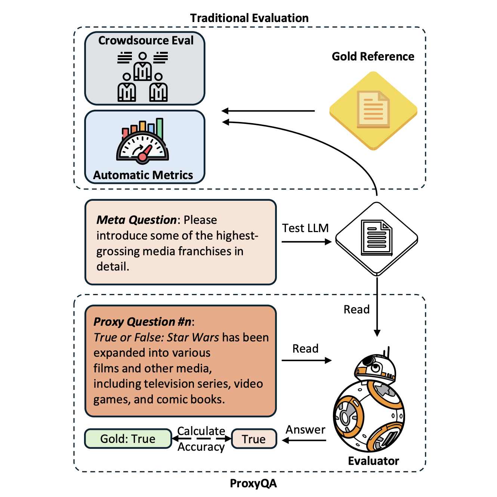
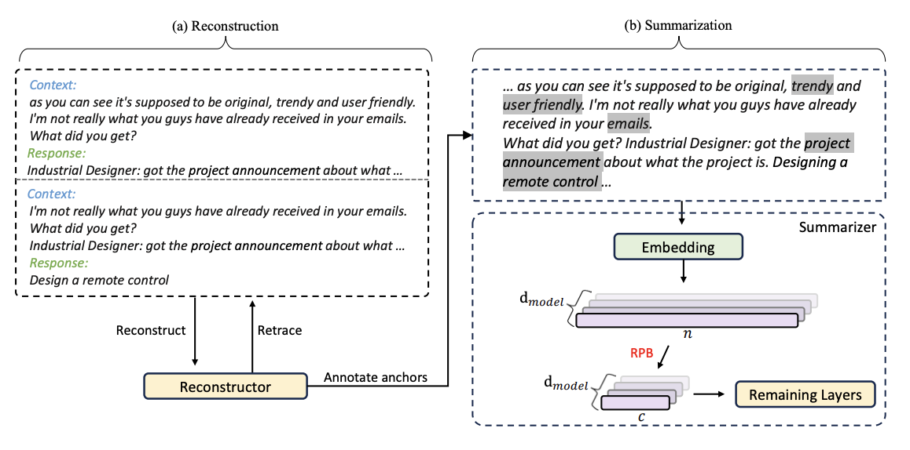
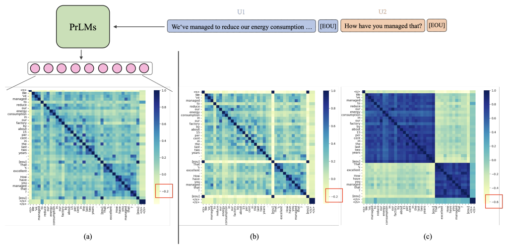
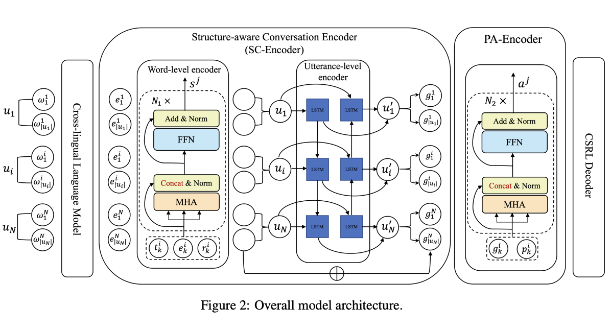
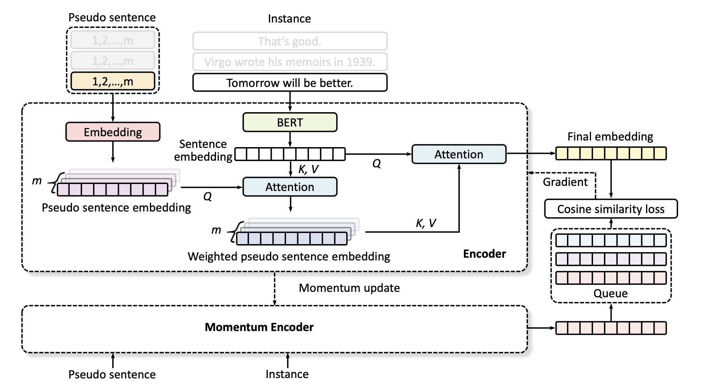

|
Haochen TAN I'm a PhD student in the Computer Science Department of City University of Hong Kong in HKSAR. My PhD supervisor is Prof. Linqi Song. Currently I am a research intern at Noah's Ark Lab under the supervision of Zhijiang Guo. At CityU, I work on the sentence comprehension, long sequence compression and evaluation. Before joined Prof. Song's team, I was a research assistant under the supversion of Dr. Bernard Chiu. In my undergraduate years, I was advised by Cong Fan at UESTC. |
{kind=link}
ResearchI'm interested in natural language processing, deep learning, generative AI. Most of my research is about sentence representation, lenghty sequence compression, long-form generation and evaluation. |
|  |
PROXYQA: An Alternative Framework for Evaluating Long-Form Text Generation with Large Language Models
Haochen Tan, Zhijiang Guo, Zhan Shi, Lu Xu, Zhili Liu, Yunlong Feng, Xiaoguang Li, Yasheng Wang, Lifeng Shang, Qun Liu, Linqi Song Under Review, 2024 In this paper, we propose PROXYQA, an innovative framework dedicated to the assessment of long-text generation. PROXYQA comprises in-depth human-curated metaquestions spanning various domains, each accompanied by specific proxy-questions with pre-annotated answers. |
|  |
Reconstruct Before Summarize: An Efficient Two-Step Framework for Condensing and Summarizing Meeting Transcripts
Haochen Tan, Han Wu, Wei Shao, Xinyun Zhang, Mingjie Zhan, Zhaohui Hou, Ding Liang, Linqi Song EMNLP 2023 we propose a two-step framework, Reconstruct before Summarize (RbS), for effective and efficient meeting summarization. RbS first leverages a self-supervised paradigm to annotate essential contents by reconstructing the meeting transcripts. Secondly, we propose a relative positional bucketing (RPB) algorithm to equip (conventional) summarization models to generate the summary. |
|  |
Learning Locality and Isotropy in Dialogue Modeling
Han Wu, Haochen Tan, Mingjie Zhan, Gangming Zhao, Shaoqing Lu, Ding Liang, Linqi Song ICLR 2023 we identify two properties in dialogue modeling, i.e., locality and isotropy, and present a simple method for dialogue representation calibration, namely SimDRC, to build isotropic and conversational feature spaces. Experimental results show that our approach significantly outperforms the current state-of-the-art models on three dialogue tasks across the automatic and human evaluation metrics. |
|
Reconstruct Before Summarize: An Efficient Two-Step Framework for Condensing and Summarizing Meeting Transcripts
Haochen Tan, Han Wu, Wei Shao, Xinyun Zhang, Mingjie Zhan, Zhaohui Hou, Ding Liang, Linqi Song EMNLP 2023 we propose a two-step framework, Reconstruct before Summarize (RbS), for effective and efficient meeting summarization. RbS first leverages a self-supervised paradigm to annotate essential contents by reconstructing the meeting transcripts. Secondly, we propose a relative positional bucketing (RPB) algorithm to equip (conventional) summarization models to generate the summary. |
|
|  |
Zero-shot Cross-lingual Conversational Semantic Role Labeling
Han Wu, Haochen Tan, Kun Xu, Shuqi Liu, Lianwei Wu, Linqi Song Findings of NAACL, 2022 To avoid expensive data collection and error-propagation of translation-based methods, we present a simple but effective approach to perform zero-shot cross-lingual CSRL. Our model implicitly learns language-agnostic, conversational structure-aware and semantically rich representations with the hierarchical encoders and elaborately designed pre-training objectives. |
|  |
A Sentence is Worth 128 Pseudo Tokens: A Semantic-Aware Contrastive Learning Framework for Sentence Embeddings
Haochen Tan, Wei Shao, Han Wu, Ke Yang, Linqi Song Findings of ACL 2022 In this paper, we propose a semantic-aware contrastive learning framework for sentence embeddings, termed Pseudo-Token BERT (PT-BERT), which is able to explore the pseudo-token space (i.e., latent semantic space) representation of a sentence while eliminating the impact of superficial features such as sentence length and syntax. |
Miscellanea |
|
Reviewer, ACL 2024
Reviewer, EMNLP 2023 Reviewer, ACL 2023 Reviewer, EMNLP 2022 |
|
Updated at July 2023, Thanks Jon Barron for this amazing template. |